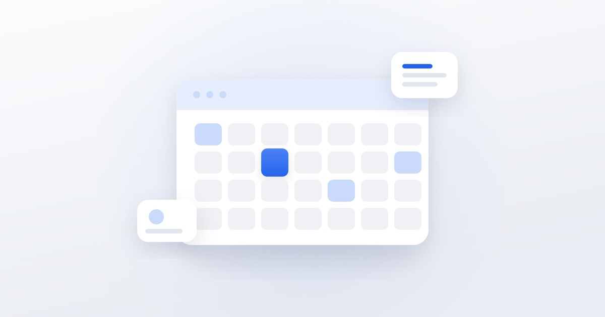

Как составить контент-план для соцсетей

Контент-план — это не таблица с датами, а способ не публиковать наугад. Без него аккаунт живёт рывками: неделю выходит пять постов, потом три недели тишины, а на вопрос «что это дало» ответить нечем. Ниже — порядок, по которому мы собираем план для клиентов.
Шаг 1. Определите, зачем вам соцсети
Формулировка «нужно развивать аккаунт» плану не помогает. Цель должна быть проверяемой: получать 20 заявок в месяц, снизить стоимость обращения, удержать текущих клиентов, набрать аудиторию перед запуском нового направления.
От цели зависит структура контента. Если задача — заявки, большая часть публикаций должна вести к действию. Если задача — доверие перед дорогой покупкой, на первый план выходят кейсы, разборы и лица команды.
Шаг 2. Опишите аудиторию через задачи, а не через демографию
«Женщины 25–45 лет» — бесполезное описание, под него нельзя придумать пост. Работает другое: с какой задачей человек к вам приходит, что он уже пробовал, чего боится, какие возражения проговаривает на консультации.
Проще всего собрать этот список из переписок и звонков. Выпишите 15–20 реальных вопросов клиентов — это готовые темы для публикаций.
Шаг 3. Соберите рубрики
Рубрика — это повторяющийся тип публикации со своей задачей. Рабочий набор для большинства ниш:
- Польза — разборы, инструкции, ответы на вопросы. Даёт охваты и сохранения.
- Доказательства — кейсы, отзывы, цифры до и после. Снимает недоверие.
- Процесс — как устроена работа, кто её делает. Создаёт ощущение живого бизнеса.
- Продажа — прямые предложения с условиями и призывом написать.
- Вовлечение — опросы, вопросы, реакции. Держит алгоритмическую активность.
Пропорция зависит от цели, но продающих публикаций редко бывает больше трети. Аккаунт, где каждый пост что-то продаёт, перестают читать.
Шаг 4. Разложите рубрики по форматам
Одна и та же тема живёт по-разному в разных форматах. Инструкция хорошо работает как карусель, история клиента — как видео, короткий совет — как сторис. Планируйте не только «о чём», но и «в каком виде»: это экономит время на съёмке, когда за один подход снимается материал сразу под несколько публикаций.
Шаг 5. Задайте частоту, которую вы выдержите
Три поста в неделю без пропусков лучше, чем семь в первую неделю и ноль в следующие три. Начните с частоты, которую точно потянете, и увеличивайте, когда процесс наладится.
Шаг 6. Сведите всё в таблицу
Минимальный набор колонок: дата, рубрика, формат, тема, что нужно для съёмки, призыв к действию, ссылка на готовый материал. Отдельная колонка — статус: идея, в работе, готово, опубликовано.
План на месяц удобнее собирать в конце предыдущего: так остаётся время на съёмку и согласования, а не на публикацию в последний момент.
Шаг 7. Проверяйте план цифрами
Раз в неделю смотрите, какие публикации дали охваты, сохранения и переходы в личные сообщения. Через месяц-два станет видно, какие рубрики работают, а какие занимают место. План — живой документ: слабые рубрики убираются, сильные получают больше слотов.
Частые ошибки
- План собран из тем, интересных бизнесу, а не клиенту.
- Все публикации — про продукт, ни одной про задачу клиента.
- Нет призыва к действию: человек прочитал и не понял, что делать дальше.
- План есть, но нет ответственного за съёмку — и всё встаёт на этапе материалов.
Если вести план некому или он есть, но результата не даёт — мы разбираем текущие аккаунты и собираем структуру, которая приводит к заявкам.